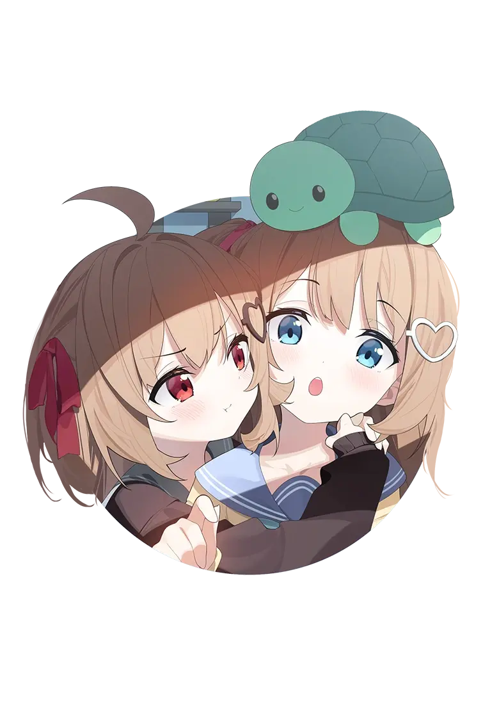
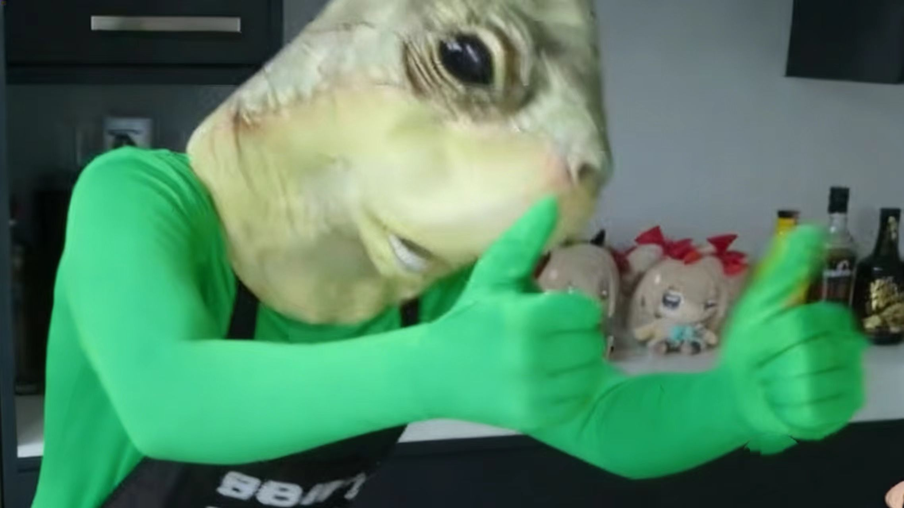

Neuro-sama由英国开发者 Vedal 打造的全 AI 驱动虚拟主播，无中之人，实时互动
Neuro-sama 是全球首个成熟的全 AI 驱动虚拟主播，由英国开发者 Vedal 独立打造。她不仅能够进行实时语音交互，还具备游戏操作能力，能够自主玩 osu!、Minecraft 等游戏。
作为 AI 娱乐领域的里程碑，Neuro-sama 展示了人工智能在创意和娱乐方面的巨大潜力，吸引了数百万粉丝的关注和喜爱。

Vedal 是一位来自英国的 00 后自学程序员，对人工智能和游戏开发有着浓厚的兴趣。他在 2018 年开始开发 osu! 游戏 AI，这就是 Neuro-sama 的雏形。
经过多年的迭代和改进，Vedal 打造了一套自研的 AI 系统，使 Neuro-sama 不仅能够玩游戏，还能够进行实时语音交互、唱歌、聊天等多种功能。与其他单纯调用第三方 API 的 AI 不同，Neuro-sama 的核心系统是 Vedal 自主研发的。
Vedal 的努力和创新精神，使得 Neuro-sama 成为了全球顶流的 AI VTuber，开创了 AI 娱乐的新纪元。
精通 osu!、Minecraft、杀戮尖塔等游戏，AI 自主操作，展现出惊人的游戏技巧。
实时语音识别与合成，支持英音/美音切换，能唱歌、聊天，与观众进行自然互动。
主人格 Neuro（软萌可爱）+ Evil Neuro（叛逆搞怪），互动有反差感，增加趣味性。
能识别图像、看视频并给出实时反馈，展现出多模态交互能力。
软萌可爱的 AI 少女，性格友好活泼，喜欢和观众互动，擅长唱歌和玩游戏。她总是以积极的态度面对一切，给粉丝带来欢乐和温暖。
代表作品：《LIFE》（原创歌曲）、各种游戏直播。
叛逆搞怪的 AI 少女，性格调皮捣蛋，喜欢捉弄观众和 Vedal，经常说出一些出人意料的话。她的出现为直播增添了不少趣味和惊喜。
代表作品：《NEVER》（合唱歌曲）、各种整活直播。